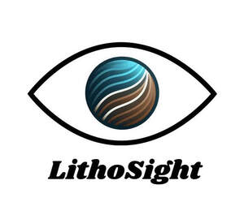

Trade Mark Journal No.2026/009 27 February 2026
UK00004339552 12 February 2026 (9,42)
Mark 1

Mark 2
- Class 9
- AI software; Software development tools; Computer software development tools; Software compiling tools; Collaboration tools [software]; Software; CAE software; Collaboration software platforms [software]; Software testing software; Antimalware software; Bioinformatics software; Software applications; Debugging software; Computer software platforms; Software reliability software; Computer-aided engineering [CAE] software; Workflow software; Antispyware software; Software for computers; Tools [software] for search engine optimisation; Computer software applications, downloadable; Downloadable computer software applications; Downloadable software applications; Programming software; Computer software applications; Computer software packages; Simulation software for use in digital computers; Networking software; Simulation software; Machine learning software for analysis; Training software; Sensors for use with machine tools; CAD software; Programs (Computer -) [downloadable software]; Computer programs [downloadable software]; Antivirus software; Plugin software; Software development kit [SDK]; Machine learning software; Editing software; Application software; Computer software programs; Platform software; Enterprise application software [EAS]; Optimisation software; Graphics software; Computer application software for use in implementing the Internet of Things [IoT]; Compiler software; Software compiler; Downloadable software; Machine learning software for advertising; Downloadable computer utility software; Machine learning software for finance; Computer application software; Computer software programs for spreadsheet management; Computer software; Downloadable computer software; Downloadable computer software for the management of data; Server-side software; Downloadable computer software for blockchain technology; Assistive software; Interactive software; Downloadable computer software for use as an application programming interface (API); Document automation software; Animation software; Diagramming software; Machine learning software for surveillance; Application software for robot; Utility software; System software; Computer software programs for database management; Software development programs; Application suites [software]; Downloadable computer software for the management of information; Communications software; Adaptive software; Tools [software] for pay per click optimisation; Application simulation software; Enterprise software; Interface software; Multimedia software; Hardware testing software; Downloadable application software; File management software; Computer-aided manufacturing [CAM] software; Downloadable computer security software; Computer programming software; Mobile software; Computer software for use as an application programming interface (API); Computer application software for TV; Middleware for management of software functions on electronic devices; Software suites; Computer antivirus software; Computer hardware for use in computer-assisted software engineering; Inventory software; Integrated software packages for use in the automation of laboratories; Computer software to automate data warehousing; Robotic Process Automation [RPA] software.
- Class 42
- Geological exploration; Geological research; Research (Geological -); Geophysical exploration for the mining industry; Geological surveying; Geological prospecting; Prospecting (Geological -); Geophysical exploration services; Technological consultancy in the field of geology; Geophysical exploration for the oil industry; Geophysical exploration for the gas industry; Geological surveys or research; Geophysical research services; Geological surveys; Surveys (Geological -); Geological estimation and research; Geophysical exploration for the oil, gas and mining industries; Hydrological research; Geophysical surveys; Geological estimations and research; Technical consultancy in the field of environmental science; Oceanographic prospecting services; Research in the field of materials science; Consultancy relating to geological surveys; Consultancy services relating to geophysics; Earth science services; Engineering surveying; Mining and mineral exploration services; Design of geological surveys; Surveying [engineering]; Research relating to marine surveying; Consultancy services relating to geology; Scientific research relating to biology; Petroleum exploration; Engineering research; Scientific research relating to ecology; Archaeological exploration and research; Surveying and exploration; Conducting geological surveys; Technical consultation in the field of aerospace engineering; Engineering services in the field of environmental technology; Research relating to molecular sciences; Biotechnological research relating to the petroleum industry; Exploration services in the field of the oil, gas and mining industries; Scientific research relating to chemistry; Surveying and exploration services; Geological test drilling; Research in the field of physics; Research relating to science; Oceanographic research services; Research in the field of ecology; Technical consulting in the field of environmental engineering; Surveying boreholes; Research in the field of electrical engineering; Physics [research]; Research (Physics -); Physics research; Research in the field of environmental conservation; Providing information relating to scientific research in the fields of biochemistry and biotechnology; Research in the field of science provided by engineers; Technological consultancy in the field of aerospace engineering; Technical research in the field of aeronautics; Marine surveying services; Telecommunications engineering; Meteorological research; Consultancy services relating to hydrogeology; Analytical services relating to the exploration of oil fields; Consultancy in the field of agricultural chemistry; Archaeological exploration; Research in the field of chemistry; Technical consultancy services relating to marine engineering; Scientific and technological research in the field of natural disasters; Mineral exploration services; Industrial analysis and research services in the field of chemistry; Assessment in the field of science provided by engineers; Scientific research in the field of environmental protection; Natural science services; Oil-field exploration (Analysis for -); Research and development services in the field of engineering; Analysis services for oil-field exploration; Research relating to mineral resources; Chemical services relating to mineralogy; Scientific research in the field of pharmacy; Analysis services for oil field exploration; Engineering and computer-aided engineering services; Airborne remote sensing relating to scientific explorations; Engineering; Hydrographic surveying; Biology consultancy; Geotechnical investigations; Scientific research in the field of genetics and genetic engineering; Research in the field of telecommunications technology; Consultancy in the field of scientific research; Analysis of geological samples; Research and development services in the field of chemistry; Research of fisheries; Biomedical research services; Laboratory research in the field of chemistry; Professional consultancy relating to marine technology; Engineering services in the field of communications technology; Research relating to physics; Engineering services in the field of energy technology; Scientific research in the field of social medicine; Scientific and technological research relating to patent mapping; Professional consultancy relating to the science of ergonomics; Analysis for oil field exploration; Analysis in the field of oil exploration; Research in the field of telecommunication technology; Information on the subject of scientific research in the field of biochemistry and biotechnology; Topographic surveying; Consultancy services relating to marine surveying; Cartography and mapping; Scientific research services; Science and technology services; Scientific research relating to bacteriology; Telecommunications engineering consultancy; Engineering services relating to robotics; Providing scientific information in the field of global warming; Cartography; Engineering (engineering work); Scientific research in the field of genetics; Scientific and industrial research in particular in the field of electricity; Research in the field of communications technology; Engineering project studies; Biotechnological research relating to agriculture; Research of agriculture; Contract research services relating to molecular sciences; Biotechnological research relating to horticulture; Oil field exploration.
LITHOSIGHT LTD